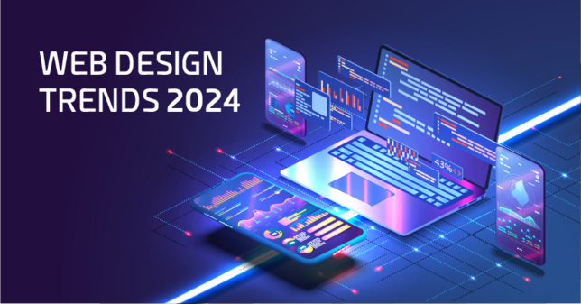
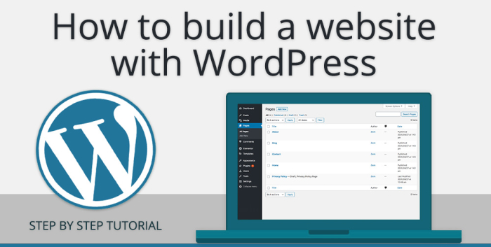

Web Design Trends in 2024: What's Shaping the Future of Websites?
The world of web design is constantly evolving, with new trends emerging every year that push the boundaries of creativity and functionality. As we step into 2024, we’re seeing some exciting design shifts that focus on enhancing user experience, embracing minimalism, and incorporating cutting-edge technology. If you’re looking to build a modern website or simply want to stay ahead of the curve, here are some of the top web design trends in 2024 that you should know about.

1. Dark Mode with a Twist
Dark mode has been popular for a while, but in 2024, it’s being taken to the next level. Designers are adding soft gradients, pops of neon, and subtle animations to make dark mode more visually interesting and interactive.
2. 3D and Immersive Visuals
Thanks to advancements in technology, 3D elements and immersive visuals are becoming more accessible and popular in web design. These elements grab attention and make websites more engaging.
3. Minimalism and White Space
Less is more in 2024. Minimalist designs with clean lines and ample white space help users focus on content without feeling overwhelmed.
4. AI-Powered Personalization
In 2024, more websites are leveraging AI to deliver personalized experiences, tailoring content and recommendations to users’ preferences.
5. Bold Typography
Typography is making a statement this year with bold and oversized fonts, adding impact to websites without relying too much on visuals.
6. Interactive Micro-Animations
Micro-animations are being used across websites to provide subtle feedback or guide users, enhancing the overall interaction and engagement.
7. Augmented Reality (AR) Integration
AR is growing in popularity, especially in e-commerce, allowing users to virtually try products or see them in real-world environments before making a purchase.
8. Sustainability and Eco-Friendly Design
Sustainability is influencing web design with energy-efficient practices like lightweight code and optimized imagery to reduce data consumption.
9. Asymmetrical Layouts
Asymmetrical layouts are making websites look more dynamic and unique while still maintaining functionality and easy navigation.
10. Voice User Interface (VUI)
Voice-activated features are emerging, allowing users to interact with websites through voice commands for a more hands-free experience.
Web design in 2024 is all about creating more personalized, engaging, and accessible experiences for users. Whether through bold typography, interactive animations, or AI-driven personalization, the focus is on making websites not just functional, but memorable.
#2. How to Create a WordPress Website: A Beginner’s Guide
So, you’ve decided to create your own website using WordPress? Great choice! Whether you're starting a blog, launching a portfolio, or creating an online store, WordPress makes it easy to bring your ideas to life. In this guide, I’ll walk you through the steps to create your own WordPress site—even if you’re a complete beginner!

Step 1: Choose a Domain Name and Hosting
Before you can build your website, you need a domain name (your website’s address, like www.mywebsite.com) and hosting (where your website files are stored).
- Domain Name: Think of something unique and relevant to your brand or blog.
- Web Hosting: Choose a reliable hosting provider like Bluehost, SiteGround, or HostGator. These services often have one-click WordPress installation to make things easier.
Once you’ve purchased a domain and hosting, you’re ready to install WordPress.
Step 2: Install WordPress
Most hosting providers offer an easy way to install WordPress with just a few clicks. In your hosting dashboard, look for something like "Install WordPress" or "One-Click Install."
Follow the instructions, and within a few minutes, WordPress will be set up on your site. You’ll get a login link (usually something like yourdomain.com/wp-admin) to access the WordPress dashboard.
Step 3: Choose a Theme
Once you log in to WordPress, it’s time to make your site look great. WordPress uses "themes" to control how your website looks. Go to the Appearance > Themes section, where you can browse free themes or upload a premium one.
- Free Themes: WordPress has thousands of free themes that are easy to install and customize.
- Premium Themes: If you want something more unique and professional, consider buying a theme from places like ThemeForest or Elegant Themes.
Step 4: Customize Your Website
Now that you have your theme, you can start customizing your site. Go to Appearance > Customize to access the customization panel. Here you can:
- Change colors and fonts.
- Upload your logo and adjust your site’s layout.
- Set up your homepage.
If your theme comes with demo content, you can import it to see how the theme looks in action and replace the content with your own.
Step 5: Add Essential Plugins
Plugins are like apps for your WordPress site. They add extra functionality, such as improving security, adding contact forms, or speeding up your site. To install plugins, go to Plugins > Add New.
Here are a few must-have plugins to get you started:
- Yoast SEO: Helps you optimize your content for search engines.
- WPForms: Easy-to-use contact form builder.
- W3 Total Cache: Speeds up your site by caching content.
- Wordfence Security: Protects your site from hackers.
Step 6: Create Pages and Posts
With your theme set up and plugins installed, it’s time to add content to your site.
- Pages: Go to Pages > Add New to create static pages like "About" or "Contact."
- Posts: If you’re starting a blog, go to Posts > Add New to create your first blog post.
Step 7: Set Up Your Menu
Once you have a few pages created, it’s time to set up your navigation menu. This will help visitors easily find their way around your site. Go to Appearance > Menus to add your pages to a menu and arrange them in the order you like.
Step 8: Launch Your Website!
Once you’re happy with how everything looks and works, it’s time to launch your website! Go through your site to double-check everything—make sure all links work, pages load correctly, and the site is mobile-friendly.
When you’re ready, share your new WordPress website with the world!

George Washington
"This article provides an excellent overview of the emerging trends shaping the future of web design in 2024. The focus on AI-driven personalization and immersive visuals aligns with the direction many industries are heading, ensuring a more tailored and engaging user experience."
EmilyDesigns
"I love the emphasis on dark mode! It not only looks sleek but is also easier on the eyes. Can't wait to implement these trends into my next project!"
Reply
TechSavvy2024
"Great insights! The use of 3D visuals is something I’ve been experimenting with, and I agree it really makes websites pop. Thanks for sharing these trends!"
Reply
CreativeCoder
"Bold typography is a game changer! It adds so much character to a site. I’m excited to see how designers use it creatively this year."
Reply
UX_Guru
"I appreciate the focus on user experience and personalization. It’s so important for keeping users engaged. Looking forward to seeing how these trends evolve!"
Reply
Sustainable Designer
"Sustainability in web design is a trend I’m passionate about. It's great to see more designers recognizing the importance of eco-friendly practices!"
Reply
AR_Enthusiast
"The integration of AR in web design is fascinating! It’s exciting to think about how it can enhance user interactions. Thanks for highlighting this trend!"
Reply